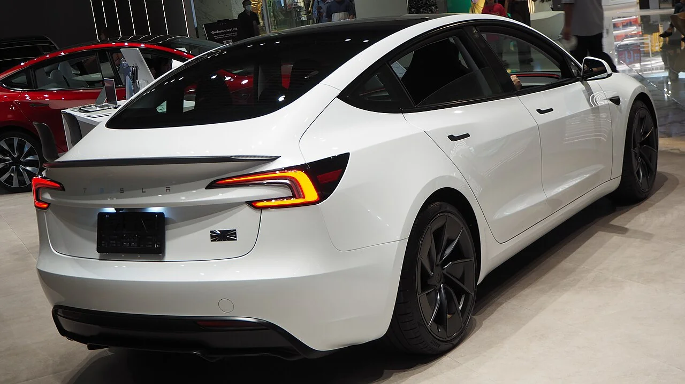

▲ 재고가 빨리 빠지면 제조사가 할인할 이유도 함께 줄어든다
신차 값이 오르는 것보다 나쁜 상황이 있습니다.
값이 오르는데 할인까지 줄어드는 경우입니다.
7월 미국 시장이 정확히 그랬습니다. 평균 거래가는 4만9,855달러로 올해 상반기 최고였고, 대당 인센티브는 3,192달러로 1월 이후 최저였습니다.
1. 두 숫자가 반대로 움직였다
| 항목 | 7월 | 비교 |
|---|---|---|
| 평균 거래가(ATP) | 4만9,855달러 | 6월 4만9,758달러 대비 +0.2% 전년 4만8,916달러 대비 +1.9% |
| 대당 인센티브 | 3,192달러 | ATP의 6.4% (6월 7%, 전년 7.3%) |
차값은 오르고 깎아주는 비율은 내려갔습니다. 소비자가 실제로 내는 금액은 두 방향에서 동시에 밀려 올라간 셈입니다.
인센티브 비율은 2개월 연속 줄어 1월 이후 최저입니다. 연초에는 ATP의 7%대였던 것이 6.4%까지 내려왔습니다.
2. 원인은 재고
제조사가 할인을 하는 이유는 단순합니다. 차가 안 팔려서입니다. 반대로 잘 팔리면 할인할 이유가 없어집니다.
| 항목 | 수치 |
|---|---|
| 재고 수량 | 273만 대 (전월 대비 -3.5%) |
| 재고일수 | 82일 → 75일 |
📍 재고일수가 무엇을 뜻하나
지금 재고를 현재 판매 속도로 다 파는 데 걸리는 날짜입니다. 이 숫자가 짧아졌다는 것은 차가 더 빨리 나가고 있다는 뜻입니다. 업계에서는 통상 60일 안팎을 건전한 수준으로 봅니다. 75일은 아직 여유가 있는 편이지만, 82일에서 줄어든 방향 자체가 제조사의 협상력을 키웁니다.
▲ 평균 거래가는 실제 팔린 차들의 평균이라, 싼 차가 많이 팔리면 내려간다 ⓒ Wikimedia Commons
3. 그런데 평균 상승폭은 크지 않았다
전년 대비 1.9%는 생각보다 완만한 수치입니다. 관세 부담을 감안하면 더 올랐어야 할 상황입니다.
이유는 팔린 차의 구성에 있습니다. 저가 차종의 수요가 늘면서 평균을 끌어내렸습니다.
| 세그먼트 | ATP |
|---|---|
| 컴팩트카 | 2만7,904달러 |
| 소형 SUV | 3만1,052달러 |
평균 거래가는 '차값'이 아니라 '실제 팔린 차들의 평균'입니다. 그래서 값이 오르지 않아도 비싼 차가 더 팔리면 올라가고, 싼 차가 더 팔리면 내려갑니다. 이번에는 후자가 작동해 상승폭을 눌렀습니다.
4. 전기차는 다른 흐름
| 항목 | 수치 |
|---|---|
| 전기차 평균 거래가 | 5만6,126달러 |
| 전기차 인센티브 | 6,626달러 — 전년 대비 -24% |
| 테슬라 인센티브 | 전년 대비 -34% |
전기차 인센티브는 여전히 전체 평균의 두 배가 넘습니다. 6,626달러 대 3,192달러입니다. 전기차를 팔려면 아직 더 깎아줘야 한다는 뜻입니다.
다만 그 폭이 빠르게 줄고 있습니다. 전년 대비 24% 감소했고, 테슬라는 34%까지 줄였습니다.

▲ 테슬라의 인센티브는 전년 대비 34% 줄었다 ⓒ Wikimedia Commons

▲ 경쟁이 심한 전기 SUV에서는 오히려 값이 내려갔다 ⓒ Wikimedia Commons
5. 관세 기사와 함께 읽으면
미국 신차 시장에는 지금 두 개의 상승 압력이 겹쳐 있습니다.
| 요인 | 내용 |
|---|---|
| 원가 | 관세로 미국 조립차도 1,600~2,000달러 인상 |
| 수급 | 재고 감소로 인센티브 축소 |
원가는 표시가를 올리고, 수급은 실구매가를 올립니다. 방향이 같으니 소비자가 체감하는 부담은 두 배로 옵니다.
다만 예외 구간도 분명합니다. 경쟁이 심한 전기 SUV에서는 캐딜락 옵틱이 1,995달러를 내렸고, 포드 F-150 라이트닝은 배터리를 키우고도 시작가를 묶었습니다. 시장 전체가 한 방향으로 가는 것은 아닙니다.
6. 국내에서 참고할 지점
국내 신차 시장도 같은 원리로 움직입니다. 대기 물량이 길면 할인이 사라지고, 재고가 쌓이면 조건이 좋아집니다.
✅ 구매 시점을 잡을 때 보는 신호
· 해당 차종의 출고 대기 기간 — 짧아지면 조건이 좋아질 여지
· 연식 변경 직전 — 구형 재고 소진 조건이 나온다
· 월말·분기말·연말 — 실적 마감 시점
· 부분변경 출시 직후 — 이전 모델 재고
· 할인과 저금리 택일인지 확인 — 합쳐서 계산해야 유불리가 나온다
7. 정리
7월 미국 신차 평균 거래가는 4만9,855달러로 올해 상반기 최고를 기록했습니다. 전년 대비 1.9% 상승입니다.
동시에 인센티브는 대당 3,192달러, ATP의 6.4%까지 내려갔습니다. 2개월 연속 감소이며 1월 이후 최저입니다.
원인은 재고입니다. 273만 대로 3.5% 줄고 재고일수가 82일에서 75일로 짧아지면서, 제조사가 할인할 이유가 줄었습니다. 전기차는 여전히 6,626달러를 깎아주지만 그 폭도 전년 대비 24% 줄었습니다.